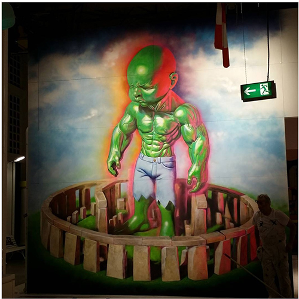
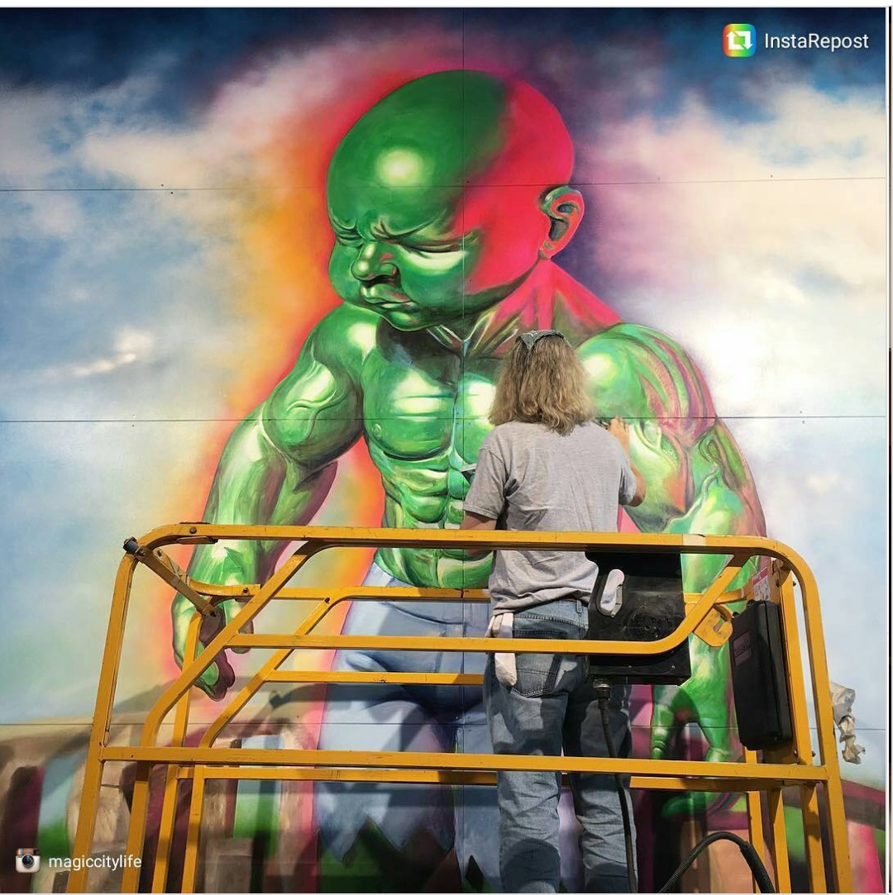

Magic City, Dresden, 2016
Ron English’s Temper Tot mural created for MAGIC CITY – The Art of the Street in Dresden, Germany.

Work details
Description
Ron English participated in MAGIC CITY – The Art of the Street in Dresden in 2016, contributing a large-scale Temper Tot mural as part of the immersive exhibition. The work placed one of English’s best-known POPaganda characters within a major international street art presentation built around monumental installations and artist-designed environments.
Gallery

